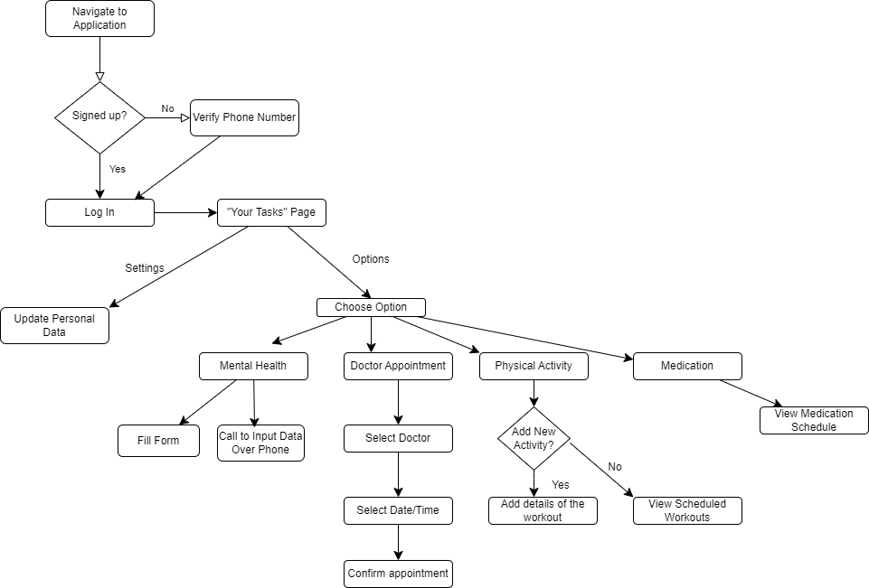
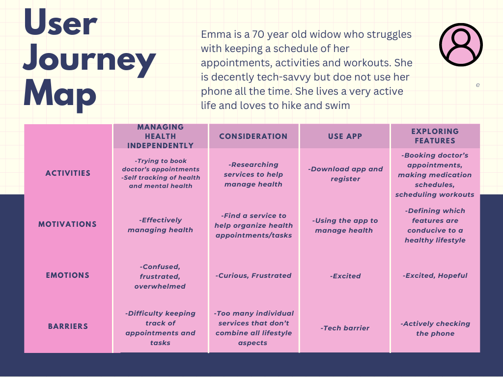

USER FLOW AND JOURNEY
User Stories:
Listening to the experiences of various users helped us find the pitfalls and points of improvement for this application.
Here are some examples of adjustments we made based on user feedback:
Marcella was trying to register for the application but was turned off initially by the lengthy registration process and all the input fields. Instead, we decided to only do a phone verification and implemented the opportunity to add/update personal data after so the app can be explored first.
George loves the mental health tracker feature of the app. However, it is too time consuming for him to enter the data with the various interactive elements on the page. Therefore, we decided to add a call feature which enables George to speak directly with a professional who can input the data for him.
The user flow is further highlighted by the below diagram:
Here is our user map
